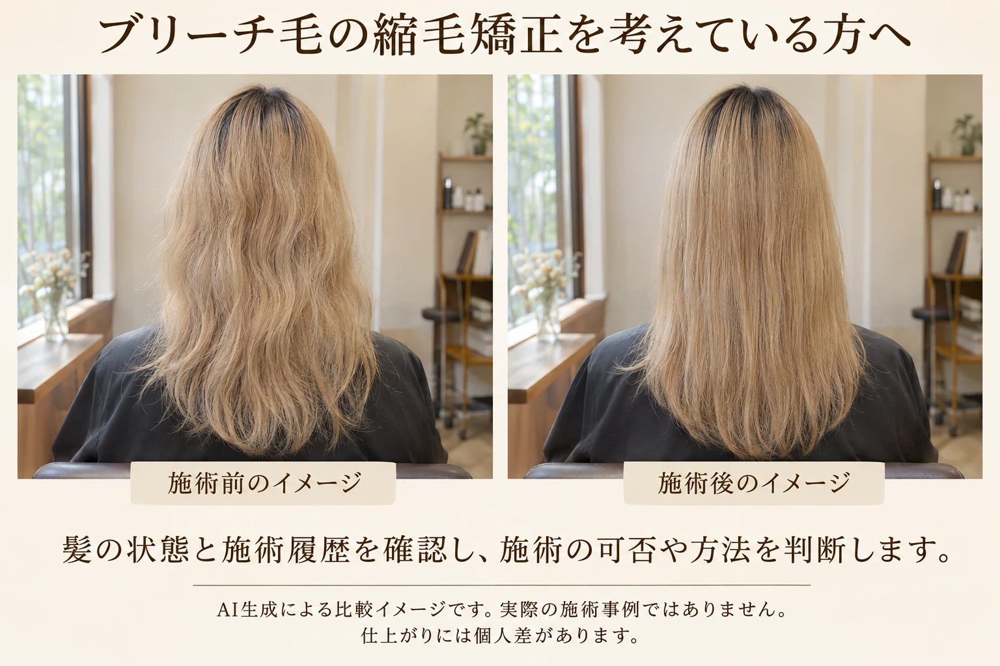

ILLUSTRATION / AI生成イメージ
ブリーチ毛の相談を考えるための、説明用イメージ

この画像は実際のお客様の施術結果や、仕上がりの保証を示すものではありません。髪の状態により、施術を見送る場合もあります。
酸性なら、どのブリーチ毛にも施術できるわけではありません
同じブリーチ回数でも、施術の時期、重なっている部分、その後のカラーや縮毛矯正などによって履歴は異なります。「酸性」という言葉だけで、施術できる・傷まないとお約束することはありません。
他店で断られた場合も、どのような説明を受けたかお知らせください。相談を受け付けることと、必ず施術できることは別です。
事前にお知らせいただきたい履歴
ブリーチやハイライトをした時期と回数、以前の縮毛矯正やパーマ、市販カラーを含むその後のカラー履歴を、分かる範囲で教えてください。
濡れたときの絡まり、切れ毛、普段のお手入れで気になることも参考になります。髪全体と毛先が分かる写真があると、事前相談で状況を共有しやすくなります。
施術の可否と、施術する範囲を相談します
事前の写真だけで施術可能と断定せず、ご来店時に実際の髪の状態を確認します。希望の仕上がりを伺ったうえで、施術する部分や方法、今回は見送る選択も含めて相談します。
髪質改善トリートメントを組み合わせる場合も、それだけで全ての髪に縮毛矯正ができるという意味ではありません。ご希望と、現在の髪にできることを丁寧にすり合わせます。
まずはLINEで、メニューを決めずにご相談ください
ブリーチ毛や複数の施術履歴がある方は、ネット予約の前にLINE相談をご利用ください。現在気になっていることと、覚えている施術履歴をお送りいただければ大丈夫です。
店舗は東大阪市金岡3-27-25のLatief店舗内です。弥刀駅・久宝寺口駅から徒歩圏内で、駐車場もご利用いただけます。ご相談は石田学が承ります。
よくあるご相談
ブリーチ1回なら施術できますか？
回数だけでは判断できません。以前の縮毛矯正やカラー、重ねて施術された部分なども含めて確認します。
ハイライトだけでも履歴を伝える必要はありますか？
はい。部分的なハイライトも、施術の時期と分かる範囲の内容をお知らせください。
相談したら必ず縮毛矯正を受ける必要がありますか？
いいえ。相談だけでも大丈夫です。ご説明した内容を確認したうえで、施術するかどうかをお決めいただけます。
東大阪市金岡・弥刀・久宝寺口周辺からのご相談
Latief Atelierは、Latief店舗内で施術する完全予約制のヘアアトリエです。住所は大阪府東大阪市金岡3-27-25。近鉄弥刀駅・久宝寺口駅から徒歩圏内、駐車場あり。入口や場所は店舗案内でご確認いただけます。
月・火定休。水〜金は15:00〜18:00、土日は10:00〜18:00です。施術に必要な時間により受付可能な日時が異なります。祝日や臨時のお休みを含め、ご希望日時は予約ページまたはLINEでご確認ください。
ネット予約はBest Hair Latiefの石田学指名ページへ移動します。ブリーチ毛や複雑な施術履歴のある方は、まずLINEでご相談ください。